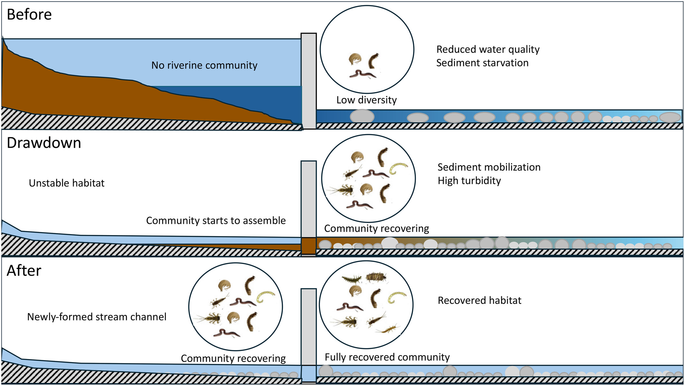
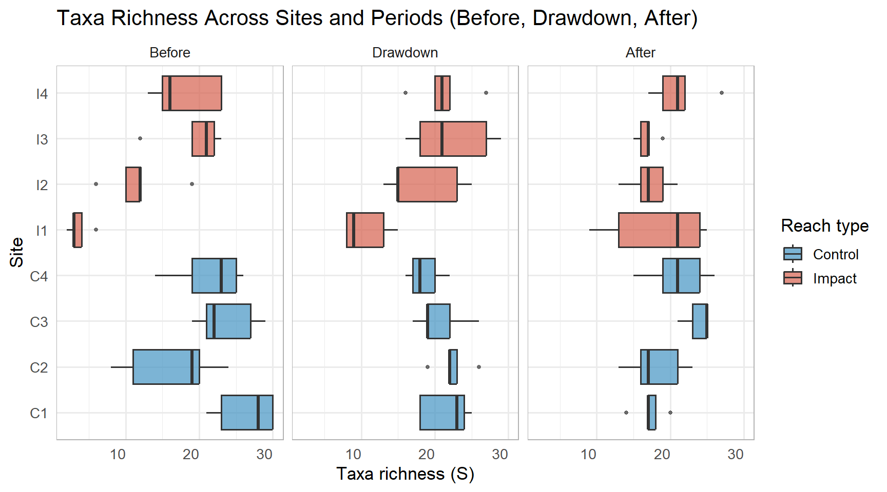
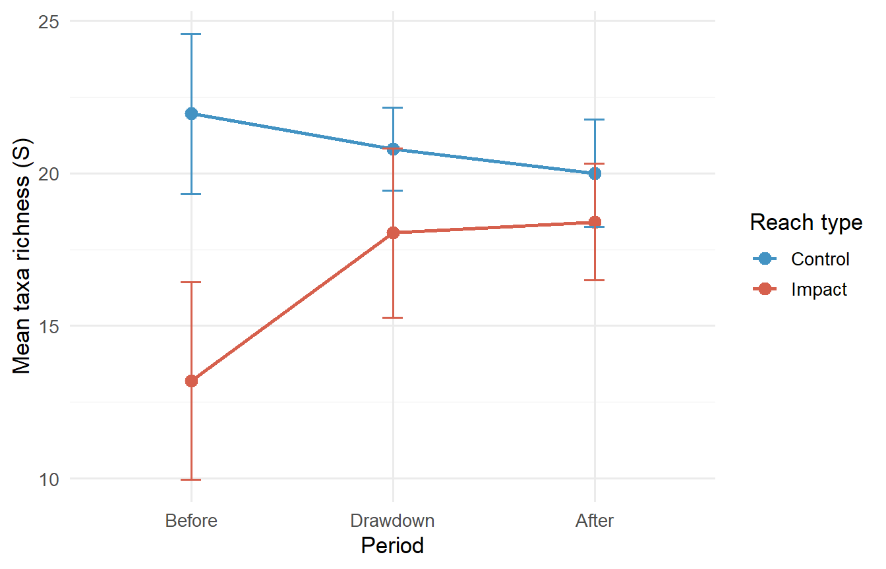
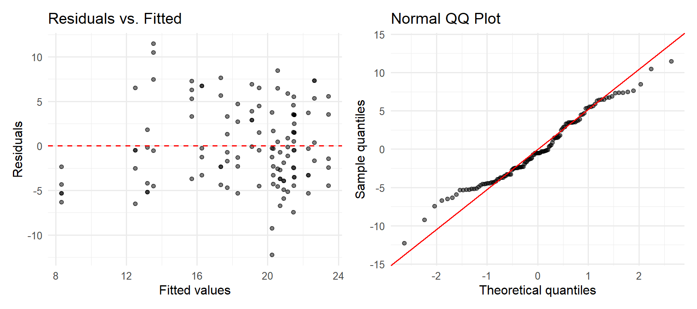
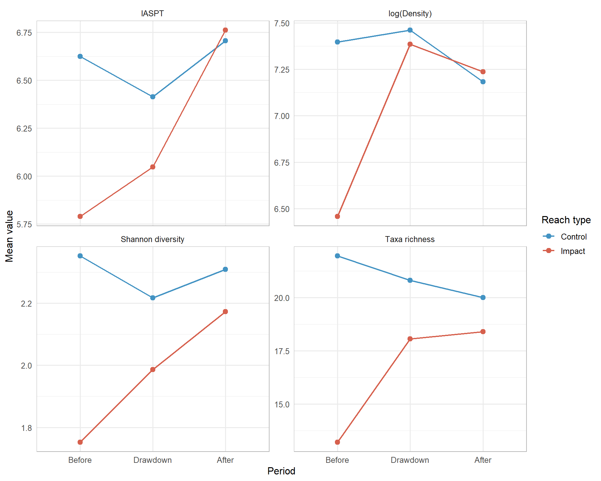

Code
library(tidyverse)
library(readxl)
library(lme4)
library(broom.mixed)
library(patchwork)
library(knitr)Lucian Scher & Marie Tolteca
March 6, 2026
Atristain et al. (2024) asked whether decommissioning the Enobieta Dam (42 m, northern Spain) restored downstream macroinvertebrate communities. They used a multiple Before-After/Control-Impact (mBACI) design, the ecological equivalent of difference-in-differences (DiD).

Data are from the Dryad Digital Repository. Download Atristainetal_JAE_Data.xlsx and place it in a data/ subfolder.
New names:
• `Site` -> `Site...1`
• `Site` -> `Site...5`invert <- invert_raw |>
select(site_name, Replicate, Period, Reach, site_code, S, `H´`, TD, IASPT) |>
rename(richness = S, shannon = `H´`, density = TD) |>
mutate(
reach_type = case_when(
Reach == "C" ~ "C",
Reach == "R" ~ "R",
TRUE ~ "I"
),
period = factor(Period, levels = c("B", "D", "A"),
labels = c("Before", "Drawdown", "After")),
reach_type = factor(reach_type, levels = c("C", "I", "R"))
)
# filter to control + impact only (reservoir sites only sampled post-drawdown)
invert_baci <- invert |> filter(reach_type %in% c("C", "I"))
glimpse(invert_baci)Rows: 120
Columns: 11
$ site_name <chr> "Enobieta Up", "Enobieta Up", "Enobieta Up", "Enobieta Up",…
$ Replicate <dbl> 1, 2, 3, 4, 5, 1, 2, 3, 4, 5, 1, 2, 3, 4, 5, 1, 2, 3, 4, 5,…
$ Period <chr> "B", "B", "B", "B", "B", "B", "B", "B", "B", "B", "B", "B",…
$ Reach <chr> "C", "C", "C", "C", "C", "I1", "I1", "I1", "I1", "I1", "C",…
$ site_code <chr> "C1", "C1", "C1", "C1", "C1", "I1", "I1", "I1", "I1", "I1",…
$ richness <dbl> 21, 23, 30, 30, 28, 6, 2, 4, 3, 3, 24, 20, 19, 11, 8, 10, 1…
$ shannon <dbl> 2.7536694, 2.6475343, 2.6377758, 2.5200668, 2.6637126, 0.93…
$ density <dbl> 2355.55556, 4277.77778, 2655.55556, 3277.77778, 1700.00000,…
$ IASPT <dbl> 6.500000, 6.434783, 6.607143, 6.777778, 6.571429, 3.833333,…
$ reach_type <fct> C, C, C, C, C, I, I, I, I, I, C, C, C, C, C, I, I, I, I, I,…
$ period <fct> Before, Before, Before, Before, Before, Before, Before, Bef…Data Description:
richness (S, taxa richness), shannon (H’, Shannon-Wiener diversity), density (TD, total invertebrate density), IASPT (pollution tolerance index)reach_type - Impact (I1-I4, downstream of dam) vs. Control (C1-C4, undammed tributaries + upstream)period - Before (Nov 2017), Drawdown (Oct 2019), After (Nov 2020)invert_baci |>
ggplot(aes(x = site_code, y = richness, fill = reach_type)) +
geom_boxplot(alpha = 0.7, outlier.size = 1) +
facet_wrap(~period, ncol = 3) +
scale_fill_manual(values = c("C" = "#4393C3", "I" = "#D6604D"),
labels = c("Control", "Impact")) +
labs(x = "Site", y = "Taxa richness (S)", fill = "Reach type") +
theme_minimal(base_size = 13) +
theme(axis.text.x = element_text(angle = 45, hjust = 1),
panel.border = element_rect(color = "grey70", fill = NA, linewidth = 0.5))
# ADD RESERVOIR?
did_means <- invert_baci |>
group_by(period, reach_type) |>
summarise(mean_richness = mean(richness),
se = sd(richness) / sqrt(n()),
.groups = "drop")
ggplot(did_means, aes(x = period, y = mean_richness,
color = reach_type, group = reach_type)) +
geom_point(size = 3) +
geom_line(linewidth = 1) +
geom_errorbar(aes(ymin = mean_richness - 1.96 * se,
ymax = mean_richness + 1.96 * se), width = 0.1) +
scale_color_manual(values = c("C" = "#4393C3", "I" = "#D6604D"),
labels = c("Control", "Impact")) +
labs(x = "Period", y = "Mean taxa richness (S)", color = "Reach type") +
theme_minimal(base_size = 13)
Annotation:
The mBACI design maps onto DiD as follows:
| DiD Term | mBACI Equivalent |
|---|---|
| Treatment group | Impact sites (I1–I4) |
| Control group | Control sites (C1–C4) |
| Pre-treatment | Before period (B) |
| Post-treatment | Drawdown (D) & After (A) |
| Treatment effect | period × reach_type interaction |
Linear mixed model fit by REML ['lmerMod']
Formula: richness ~ period * reach_type + (1 | site_code)
Data: invert_baci
REML criterion at convergence: 706.7
Scaled residuals:
Min 1Q Median 3Q Max
-2.5983 -0.7530 -0.1060 0.7423 2.4335
Random effects:
Groups Name Variance Std.Dev.
site_code (Intercept) 8.905 2.984
Residual 22.225 4.714
Number of obs: 120, groups: site_code, 8
Fixed effects:
Estimate Std. Error t value
(Intercept) 21.950 1.827 12.015
periodDrawdown -1.150 1.491 -0.771
periodAfter -1.950 1.491 -1.308
reach_typeI -8.750 2.584 -3.387
periodDrawdown:reach_typeI 6.000 2.108 2.846
periodAfter:reach_typeI 7.150 2.108 3.391
Correlation of Fixed Effects:
(Intr) prdDrw prdAft rch_tI prD:_I
peridDrwdwn -0.408
periodAfter -0.408 0.500
reach_typeI -0.707 0.289 0.289
prdDrwdw:_I 0.289 -0.707 -0.354 -0.408
prdAftr:r_I 0.289 -0.354 -0.707 -0.408 0.500Annotation:
period:reach_type interaction is the DiD estimator; it measures whether the change over time differed between control and impact sitesperiod:reach_type interaction terms are the key; we’ll test them formally below| Effect | Term | Estimate | SE | Statistic | CI Lower | CI Upper |
|---|---|---|---|---|---|---|
| fixed | (Intercept) | 21.95 | 1.827 | 12.015 | 18.369 | 25.531 |
| fixed | periodDrawdown | -1.15 | 1.491 | -0.771 | -4.072 | 1.772 |
| fixed | periodAfter | -1.95 | 1.491 | -1.308 | -4.872 | 0.972 |
| fixed | reach_typeI | -8.75 | 2.584 | -3.387 | -13.814 | -3.686 |
| fixed | periodDrawdown:reach_typeI | 6.00 | 2.108 | 2.846 | 1.868 | 10.132 |
| fixed | periodAfter:reach_typeI | 7.15 | 2.108 | 3.391 | 3.018 | 11.282 |
Annotation:
(Intercept) - mean richness for control sites in the Before period (baseline)reach_typeI - impact vs. control gap in the Before period (pre-existing dam effect)periodDrawdown:reach_typeI - DiD estimate for Drawdown period: did impact sites change differently than controls from Before → Drawdown?periodAfter:reach_typeI - DiD estimate for After period: the main recovery effectperiodAfter:reach_typeI estimate means impact sites gained more richness than controls between Before and After - i.e., recovery attributable to drawdownAnalysis of Variance Table
npar Sum Sq Mean Sq F value
period 2 81.517 40.758 1.8339
reach_type 1 81.605 81.605 3.6717
period:reach_type 2 294.817 147.408 6.6325Annotation:
period:reach_type interaction, tests whether trajectories over time differed at all between impact and control sitesdiag_df <- data.frame(fitted = fitted(mod_richness),
resid = residuals(mod_richness))
p1 <- ggplot(diag_df, aes(x = fitted, y = resid)) +
geom_point(alpha = 0.5) +
geom_hline(yintercept = 0, linetype = "dashed", color = "red") +
labs(x = "Fitted values", y = "Residuals", title = "Residuals vs. Fitted") +
theme_minimal(base_size = 12)
p2 <- ggplot(diag_df, aes(sample = resid)) +
stat_qq(alpha = 0.5) + stat_qq_line(color = "red") +
labs(x = "Theoretical quantiles", y = "Sample quantiles",
title = "Normal QQ Plot") +
theme_minimal(base_size = 12)
p1 + p2
Annotation:
mod_shannon <- lmer(shannon ~ period * reach_type + (1 | site_code),
data = invert_baci, REML = TRUE)
mod_density <- lmer(log(density) ~ period * reach_type + (1 | site_code),
data = invert_baci, REML = TRUE)
mod_iaspt <- lmer(IASPT ~ period * reach_type + (1 | site_code),
data = invert_baci, REML = TRUE)extract_interaction <- function(model, label) {
aov <- as.data.frame(anova(model))
row <- aov["period:reach_type", ]
tibble(Response = label,
`F value` = row[["F value"]],
`Num DF` = row[["NumDF"]],
`Den DF` = row[["DenDF"]],
`p value` = row[["Pr(>F)"]])
}
bind_rows(
extract_interaction(mod_richness, "Taxa richness (S)"),
extract_interaction(mod_shannon, "Shannon diversity (H')"),
extract_interaction(mod_density, "log(Total density)"),
extract_interaction(mod_iaspt, "IASPT")
) |>
kable(digits = c(0, 2, 0, 1, 4))| Response | F value |
|---|---|
| Taxa richness (S) | 6.63 |
| Shannon diversity (H’) | 4.72 |
| log(Total density) | 5.48 |
| IASPT | 8.23 |
invert_baci |>
group_by(period, reach_type) |>
summarise(`Taxa richness` = mean(richness),
`Shannon diversity` = mean(shannon),
`log(Density)` = mean(log(density)),
IASPT = mean(IASPT),
.groups = "drop") |>
pivot_longer(cols = c(`Taxa richness`, `Shannon diversity`,
`log(Density)`, IASPT),
names_to = "metric", values_to = "mean_value") |>
ggplot(aes(x = period, y = mean_value,
color = reach_type, group = reach_type)) +
geom_point(size = 2.5) +
geom_line(linewidth = 0.8) +
facet_wrap(~metric, scales = "free_y", ncol = 2) +
scale_color_manual(values = c("C" = "#4393C3", "I" = "#D6604D"),
labels = c("Control", "Impact")) +
labs(x = "Period", y = "Mean value", color = "Reach type") +
theme_minimal(base_size = 12) +
theme(panel.border = element_rect(color = "grey70", fill = NA, linewidth = 0.5))
Annotation:
period:reach_type interaction should be significant (or at least directionally consistent) across all metrics, not just oneAtristain, M., Solagaistua, L., Larrañaga, A., von Schiller, D., & Elosegi, A. (2024). Slow drawdown, fast recovery: Stream macroinvertebrate communities improve quickly after large dam decommissioning. Journal of Applied Ecology, 61, 1481–1491. https://doi.org/10.1111/1365-2664.14656
Bates, D., Mächler, M., Bolker, B., & Walker, S. (2015). Fitting linear mixed-effects models using lme4. Journal of Statistical Software, 67, 1–48.
[blog post](